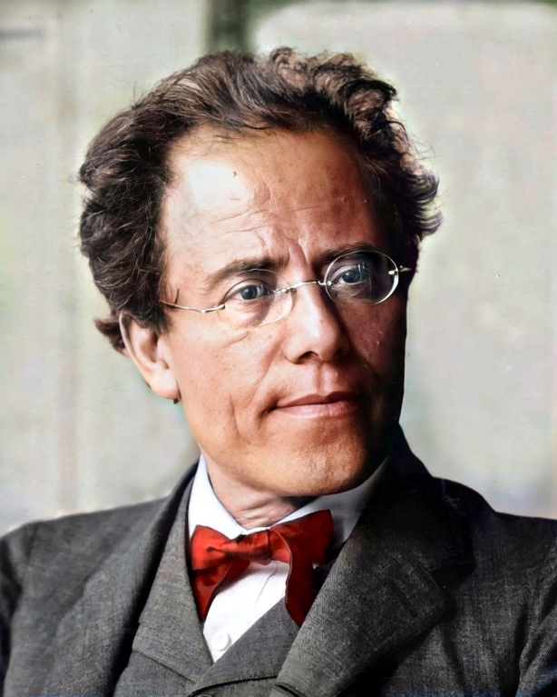

GUSTAVS MĀLERS (1860 — 1911)
Pasaule ir sašķēlusies, un plaisa iet caur manu sirdī. (H. Heine)
Kā es varu būt laimīgs, ja kaut kur cieš otra būtne? (F. Dostojevskis)
Austriešu komponists (dzimis ebreju ģimenē), gan vēlīnā romantisma, gan agrīnā modernisma pārstāvis. Ar savu daiļradi noslēdzis romantiski emocionālo pasaules skatījumu Eiropas mūzikas vēsturē (līdzīgi var teikt par Pučīni nozīmi Opermūzikā). No, romantisma tradīcijas saglabājis arī konfliktu ar skarbo realitāti, taču nereti, balansējot uz pesimisma robežas.
Mālers savulaik bijis arī atzīts diriģents un operrežisors (darbojies Vīnē, Ņujorkā u.c.). Studējis Vīnes konservatorijā.
Daiļrades estētika — ceļš un Izeja uz laimi, dzīvības un nāves tēma, cilvēka atbildība mūžības un nāves priekšā, vientulība kā filozofiska problēma, melnā humora ideja, traģiska ironija un groteska, vulgārā un izsmalcinātā apvienojums, pasaules harmonijas problēma u.tml. Mālera daiļrades savdabību nosaka šāds ārkārtīgi dziļš, neviennozīmīgs, filozofisks saturs un salīdzinoši demokrātiska, vienkārša mūzikas valoda, piem., simfonijās intonācijas ir aizgūtas no čehu, austriešu un Čigānu folkloras, kara maršiem un fanfarām, pilsētas ielu un baznīcas mūzikas (resp., var runāt par žanriskuma (dziesmas, dejas, marša) izteiktu un savdabīgu klātbūtni viņa mūzikā).
Lielu ietekmi uz Mālera daiļradi atstāja austriešu komponista Antona Bruknera (1824 — 1896) monumentālais simfonisms un austriešu komponista Hugo Volfa (1860 — 1903) vokālie darbi. Šos komponistus ar Māleru vienoja arī cieņa pret Vāgnera daiļradi. Taču, lai novērtētu Mālera novatorisko devumu mūzikas vēsturē, jāatzīmē, ka viņa darbības laikā jeb 19.gs. beigās Vīnē valdīja nosacīti konservatīvais Brāmsa gars (salīdzināšanai: Brāmsa Ceturtā simfonija un Mālera Pirmā, kas tapa raktiski vienā laikā).
Daiļrades pamatžanri — simfonijas un dziesmas, bet bieži Mālera sacerētā mūzika neiekļāvās noteikto žanru robežās.
SIMFONIJAS (pabeigtas 9). Simfonijas ir manas dzīves saturs, tajās ir viss, ko esmu izcietis (Mālers). Žanra tendence — ar katru nākamo simfoniju pieaug hronometrāža un atskaņotājsastāvs. Kulminācija ir Astotā simfonija ar klausītāju dotu nosaukumu Tūkstoš izpildītājiem: astoņiem solistiem, apjomīgam jauktajam korim, bērnu korim un sevišķi plašam simfoniskajam orķestrim (ar 8 mežragiem!). Daudzas simfonijas saistītas ar vokālo tekstu. Pēc šī kritērija iedalāmas instrumentālajās (1, 5.—7.,9.)un vokāli instrumentālajās (2. — 4., 8.).
Īsi par dažu simfoniju saturu:
· 2. simfonijā tiekot apglabāts ].simfonijas optimistiskais varonis, tādēļ tā sākas sēru marša raksturā. Tlālākajās daļās risināta tēma par cilvēka bezmērķīgo rosīšanos un dvēseles nemirstību pēc nāves kā alternatīvu.
· 4. simfonijā cilvēka dzīves grūtības alegoriski tiek skatītas bērna acīm (finālā izsalkušais bērns sapņo, ka paradīzē viņu pabaros).
· 5.—7. simfonija turpina meklēt ceļu uz laimes sasniegšanu.
· 8.simfonija ar katoļu baznīcas un Gētes tekstu palīdzību ir aicinājums aizmirst sevi un saplūst visaptverošā mīlestībā.
· 9. simfonijā risināta vientulības problēma, Pēdējos darbos (arī dziesmās) — īpaši spilgti ienāk nāves tēma.
VOKĀLĀ un vok. instr. mūzika:
Pārstāvot austriešu tradīcijas, Mālers nevarēja paiet garām dziesmas žanram, kuram godu parādīja gandrīz visi komponisti, kas dzīvojuši Vīnē — Eiropas mūzikas galvaspilsētā, taču Mālera dziesmas ir grūti klasificējamas. Tās īsti nav romances, tās nav arī dramatiskas ainas, taču katrā no dziesmām var atrast kaut ko gan no pirmajām, gan no otrajām.
· vairākas dziesmas balsij ar klavierēm;
cikli balsij ar orķestri (atsevišķas dziesmas no tiem ir iekļautas simfonijās):
· Klejojošā mācekļa dziesmas (1884)
· Zēna brīnumrags (1895)
· Četras dziesmas ar Rikerta vārdiem (1902)
· Dziesmas par mirušiem bērniem (1904) — arī ar Rikerta vārdiem (dzejnieks rakstījis savu bērnu nāves iespaidā, taču Mālera meita nomira pēc mūzikas sacerēšanas, kas ir traģiska sakritība Mālera daiļradē)
· Dziesma par zemi (1908), kas sasaucas ar simfonijas — kantātes formām (izmantota filozofiskā ķīniešu poēzija)
Visi Mālera darbi ir tematiski un idejiski saistīti:
· 1. – 4.simf., Klejojošā mācekļa dziesmas un Zēna brīnumrags (tās tiek dēvētas par brīnumraga simfonijām);
· 5. – 7.simf. un Četras dziesmas ar Rikerta vārdiem (5. — 7. simf: tiek dēvētas par Rikerta simfonijām);
· 8. – 10.simf., Dziesmas par mirušiem bērniem un Dziesma par zemi, kuras pēdējā daļa ir Atvadīšanās;
Mālera Pirmā simfonija Titāns D dur
Mūzika tapa 19.gs.80.gados kā poēma simfonijas formā ar 5 daļām. 90.gados komponists izveidoja gala versiju, t.sk., izņemot 2.daļu, taču mūsdienu koncertpraksē reizēm iespējams piedzīvot atskaņojumu pilnam ciklam:
I nodaļa No jaunības dienām:
l.daļa Pavasaris bez gala
2.daļa Ziedu dobe
3.daļa Ar pilnām burām
II nodaļa Cilvēciskā komēdija:
4.daļa Sēru maršs Kalo manierē
5.daļa No elles paradīzē
Mācību nolūkos tradicionāli apskata simfonijas 4. daļas nosaukums ir dots no Žana Pola (vācu rakstnieka Rihtera pseidonīms) romāna Titāns, taču komponists pats pie tā nepieturējās un neuzskatīja to par patieso simfonijas satura atslēgu.
Ar ko šis darbs ir nozīmīgs?
· Mālers to sacerēja salīdzinoši jauns (Tas nav nekas neparasts mūzikas vēsturē, ja neskaita to, ka šajā simfonijā praktiski pirmo reizi mūzikas vēsturē tiek izmantots melnais humors un ironija kā skats uz pasauli. Tas, protams, pieder pie modernisma 20.gadsimtā, bet pievēršam uzmanību, ka gados jaunais komponists par to runāja jau 19.gs.beigās).
· Šāds skaņdarba saturs un Mālera (kopumā) svaigā mūzikas valoda (piem., minimālisma iedīgļi I.daļā — minimālisms radīsies pēc II PK) pirmatskaņojumos nenesa lielu atzinību un milzīgu klausītāju sajūsmu (galu galā, atcerēsimies, ka, piem., Vīnē vēl valdīja konservatīvā Brāmsa simfonisma gars un standarti), taču tagad vēsturiskā perspektīvā varam novērtēt, cik šis opuss patiesībā bija progresīvs.
Šī nav tipiska Mālera mūzika, un no šī viena skaņdarba nevar gūt priekšstatu par Mālera estētiku un stilu (kurā ir daudz vairāk depresijas nekā Pirmajā simfonijā), bet Pirmā simfonija jau iezīmē Māleram raksturīgo, un tās valoda ir salīdzinoši saprotama tiem, kas vēlas ar Māleru iepazīties:
a) tā ir apjomīga (apm. stundu ilga), bet salīdzinoši īsāka par citām Mālera simfonijām;
b) tā paredz milzīgu orķestri (četrkāršo, un mēžragi ir pat septiņi; sitaminstrumentu grupa arī izvērsta — timpāni, tamtams, lielās bungas u.c.);
c) simfonijas mūzika ir intonatīvi vienota (jāieklausās I.daļas kvartu intonācijās, kas veido daudzu tēmu pamatu arī pārējās daļās) + balstīta žanriskumā (dziesma, deja, maršs);
d) fināls ir cikla centrs un virsotne;
1.daļa Pavasaris bez gala (sonātes formā)
Šī daļa ir piesātināta ar dabas poēziju. Jau pats ievads, par kuru autors teicis, ka tas ir skanošs klusums, liek iegrimt dabas dailē. Ievada materiālu veido gari vilktas stīgu flažoletu skaņas, uz kuru fona notiek sasaukšanās (iespējams, ka putni). Tam pa vidu vēl uzplaiksnī steidzīgas metāla p.i. fanfaras, kas ir tipiskas arī citām Mālera simfonijām (tās esot komponista bērnības dienu nostalģiskās skaņas — orķestra mūzika ielās). Ievadam beidzoties, iešūpojas GP intonācija (kvarta), un veidojas dziedoša, Jūsmīga tēma (aizgūta no Saule uzausa pār zemi/Klejojošā mācekļu dziesmas). BP turpina šo tēlu. Abu tēmu izvedumā svarīgi ir stīgu sulīgie tembri. Pēc GP un BP izskan tās varianti (GP1 un BP1), un visa ekspozīcija atkārtojas vēlreiz (Mālera iemīļotā divkāršā variētā ekspozīcija). Izstrādājumam ir divi posmi: (1) atgriežas ievada mūzika, un (2) skan polifoni GP un BP tēmu vijumi. Uzmanību piesaista smeldzīgas, nopūtas un it kā vaidi (tās jau ir fināla tēmas kontūras!). Reprīze ir īsa, tajā zīmīgs ir tempa paātrinājums orķestra tutti. Pacilātu noskaņu nostiprina koda, kurā timpāni pasvītro stabilo kvartas intonāciju.
2.daļa Ar pilnām burām (3 — daļu formā)
Šī ir sadzīviska daļa, kuras malējie posmi asociē smagnēju, zemniecisku lendleru, bet vidusposmā ienāk grācija un smalkāks materiāls.
3.daļa Sēru maršs Kalo manierē (3 — daļu formā)
Melnais humors un ironija visspilgtāk izpausti šeit — 3.daļā. Komponists runā par kādu Kalo gravīru, kurā attēlota sēru procesija: zvēri apglabā mirušu mednieku. Gravīra un Mālera mūzika izvirza priekšplānā liekulības problēmu, jo situācija nevar būt patiesa — tiek apglabāts ienaidnieks, un patiess prieks tiek slēpts zem izlikšanās maskām (cik rūgta dzīves realitāte!). Komponistam bija neparasts uzdevums — sacerēt grotesku, un viņš izvēlējās žanra transformācijas metodi (pārveidoja bērnu kanonu Brāli Mārtiņ, brāli Jēkab/Celies, rīts jau klāt):
· mažora vietā minors;
· lēns temps;
· zems reģistrs;
Ār šo nopietnību nesader daži momenti (pirmkārt, jau pati nenopietnās dziesmiņas nopietnība):
· kā kontrasts skan griezīgas obojas frāzes (kā palēciens, iesmiešanās);
· pārspīlēti salkana, jutekliska, čigāniska tēma, kas asociē relaksējošu kroga mūziku (varbūt tās ir patiesās zvēru domas un vēlmes šajā situācijā)
Daļas vidusposmā atgriežas simfonijas varoņa maigā un jūtīgā dvēsele — tiek izmantota melodija no Klejojošā mācekļa dziesmām. Tā ir kā pretpols samākslotajai, vēsajai, vienaldzīgajai pasaulei. Reprīzē sēru procesija atgriežas (zīmīgi, ka par pustoni augstāk — es moll), un zvēru izlikšanās kļūst vēl spilgtāka.
4.daļa No elles paradīzē (sonātes formā)
Sākas ar asu, brāzmainu skaņu virkni — kā ievainota cilvēka kliedzienu (ievads). GP ir ļoti vīrišķīga, enerģiska, stingra, pārliecinoša, to spēlē 7 (!) mežragi. BP veido spilgtu lirisko kontrastu. Izstrādājumā ir izvērsta tēlu sadursme, ieskanas arī tēmas no 1.daļas. Fināla pamattēmas atgriežas spoguļreprīzē (BP GP), bet koda sniedz optimistisku atrisinājumu: varonis ir ticības un apņēmības pilns izcīnīt dzīves cīņu šajā pasaulē.